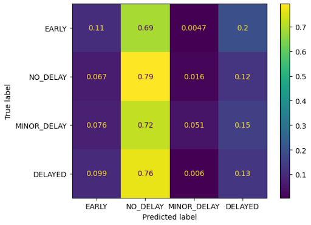

There exist sites, like wingman.wtf and knowdelay.com that predict flight delays but are often too inaccurate to fully rely on. Scholarly articles that detail the use of ML in predicting flight delays generally focus on a single airport or airline, and use regression models like decision trees [1].
Airline delays are a frustration for passengers, and because of the few resources available to accurately forecast potential delays, through this project, we aim to help travelers determine when delays are most likely to occur, and airports and airlines provide more reliable information about their operations.
Our first model, linear regression, did not prove to be successful. Two trials were run: one with all 11 features present, and the other with just 7. The 7 most important features were selected by performing forward feature selection on the training data. The regression model was then fit to each of the two sets of training data, then used to predict delays for the remaining 20% of the data (test set). The initial 80% of the data was the training set. Scikit-learn was the library used for this implementation.
The mean square error (MSE) of the model run with all 11 features was 5333.013819648823, while the coefficient of determination (\(R^2\)) was 0.020891585241412658. The MSE of the model with 7 features was 5369.736086878915, while the \(R^2\) was 0.014149603677156453, indicating that 11 features is a slightly better fit. However, all of these error values are very high, indicating that linear regression is likely not a good model to use for predicting flight delays.
The following chart shows the actual vs predicted flight delays resulting from our model. While many of the delays are nearly accurate, there is also a significant proportion of outliers and points lying off the y=x line (100% accurate).

This chart shows the residuals (target value minus predicted value) for each predicted value. We can observe that the model consistently overestimates the predicted value, and this overestimation becomes greater as the predicted value increases (in a linear fashion). The units for the plot are minutes.
The final chart shows a histogram of all residual values. The plot is denser just to the left of zero, therefore the residual value is less than 0 most of the time, again indicating overestimation of delay time. The units for the plot are minutes.

For our second model, we decided to try gradient-boosted regression. The gradient-boosted regressor is an ensemble learning technique for regression, using multiple trees to better predict an output value. As our linear regression was ineffective, we felt using a gradient-boosted version may be able to capture more complex patterns in the data that would result in more accurate predictions. We began by implementing an initial regressor and analyzing where the model performed strongly and poorly before implementing feature selection. We then used tuning techniques like Grid Search to optimize our model's hyperparameters and maximize accuracy on the testing set.
Our primary measures of accuracy for the gradient-boosted regressor model were the mean squared error and the coefficient of determination (R-squared), which calculates the percent of variation in y (the response variable) accounted for by the model. Both of these measures of accuracy are directly integrated into the sci-kit learn package, which we used to build the GBR model. Our initial, un-optimized model had a paltry R-squared score of approximately -0.01, which means it performed worse than a straight line. Fearing that we were overfitting our model to the training set, we implemented feature selection using the feature importance scores of each of the features in our model, which included polynomial features and interaction effects.
This feature selection and alteration of hyperparameters boosted the R-squared to approximately 0.04, which was improved but still poor. So we decided to optimize our hyperparameters using cross-validation and tuning techniques to find the values for these parameters that minimized loss (MSE) on the validation set. We began by trying to optimize the number of trees/estimators, by plotting the training versus validation errors when fitting the model for 1-500 trees, in intervals of 10. This helped reduce the MSE by 2.38%.
We continued by trying to optimize the coefficient of determination, which we achieved using grid search and cross validation. Unfortunately, since we introduced cross-validation to the picture, our MSE increased from 3932.72 to 4026.32!
Our next effort was to optimize the learning rate, which we achieved again by plotting a wide range of possible values. We managed to reduce the MSE to 3884.75.
Our final effort was to optimize the maximum tree depth. This was achieved by plotting a grid search and cross validation. The final MSE was determined to be 3421.60.
Overall, we found that a learning rate of 0.06, a maximum tree depth of 5, the number of trees to be 90, and minimum sample split of 10 to be optimal. However, after this lengthy process, we were able to minimize loss, improving our R-squared to roughly 0.06, meaning that optimizing the hyperparameters increased our coefficient of determination by ~50%. While this was a stark improvement on the untuned model, but still extremely unreliable as a predictor of flight delays. Based on these results, we believe that the GBR model, like its simpler linear regression cousin, was suffering from overfitting and noise. Although additional data preprocessing and dimensionality reduction may have been able to improve the model further, we determined that the regression route was simply not a very accurate method of prediction for this problem. We decided to abandon the idea and instead approach the problem as a classification one, choosing to classify flights into various buckets of delay lengths. We felt that this would maintain the functionality of our solution, as, if implemented correctly, such a model would still be highly valuable for travelers but would be less prone to the overfitting that occurred with our regression models, and less sensitive to outliers.
The random forest model utilizes the output of multiple decision trees to classify a flight as delayed, early, or one of several other categories. The first trial used arbitrary delay values (in minutes) to separate the delays into categories. The random forest model was then trained on an evenly split delay categorization into four categories. Then this was done on two categories. Finally, an analysis was done to determine the most "important" attributes in the dataset, and these attributes were increasingly added to the arbitrary delay classification to increase the model's accuracy.
The primary way to measure the accuracy of the Random Forest model was the accuracy score from the sklearn.metrics package. This function computes the number of correctly assigned labels over the total number of labels. For classification, a category is either right or wrong, so distance from the correct answer does not matter, so mean squared error is not appropriate in this case. The accuracy of the first run with arbitrary labels (numbers that seemed right which we made up) was 39.72%. For the four evenly spaced categories, we got 25.98% accuracy, and 55.97% accuracy for the two categories. The two evenly spaced categorizations were each just slightly better than 1/n, where n is the number of categories, so not ideal. After determining the most important features, we were able to increase the accuracy to a final value of 48.27% for the eight most important features. The primary method of displaying the results is through a confusion matrix, which has the true labels on the y axis and predicted labels on the x axis. A perfectly categorized model would have 1.0 as the value in each box along the diagonal from the upper left to the lower right. The higher the values along this diagonal, the better the model. The following confusion matrices are labeled with information about that trial.
Confusion matrix 1: Arbitrary delay categorization, accuracy 39.72%
Confusion matrix 2: 4 even categories, accuracy 25.98%

Confusion matrix 3: 2 even categories, accuracy 55.97%
Confusion matrix 4: Arbitrary delay categorization, top 4 attributes, accuracy 43.64%
Confusion matrix 5: Arbitrary delay categorization, top 6 attributes, 45.60%
Confusion matrix 6: Arbitrary delay categorization, top 8 attributes, accuracy 48.27%
The following chart shows the relative importance of each attribute in the dataset. This was used to determine which features to add to the Random Forest classifier after determining how best to categorize the delays.
Disappointingly, both our regression models performed very poorly. As mentioned before, the accuracy and reliability of our models were likely impacted by a poor dataset and/or insufficient data cleaning. We also should have tried to use more data, as the size of our dataset was very manageable and likely would have benefitted from expansion. While we predicted that our gradient-boosted regressor would help overcome some of the shortcomings of our linear regressor, namely overfitting and non-linear relationships, unfortunately this was not the case, as the MSE was only reduced from 4026 to 3421, which is a 15% reduction, but still resulted in a very high MSE value. Our attempt at a classifier proved to be slightly more successful with a decent accuracy rate, although still far too low to be considered anything close to reliable.
If we are to build upon this project in the future, we would try likely try to implement gradient-boosted decision trees. This model would build upon our previous work, and is a complex model that has been shown to be effective at modeling flight delays. We would also dedicate more time to data preprocessing, to eliminate more inconsistencies in the dataset. We would likely also need to find a more sophisticated/accurate way to encode the location of each airport, as well as the date to accurately reflect the season. We would likely also use a much larger dataset, and spend more time analyzing which features can be optimized.
[1] H. S. Obaid, S. A. Dheyab and S. S. Sabry, "The Impact of Data Pre-Processing Techniques and Dimensionality Reduction on the Accuracy of Machine Learning," 2019 9th Annual Information Technology, Electromechanical Engineering and Microelectronics Conference (IEMECON), Jaipur, India, 2019, pp. 279-283, doi: 10.1109/IEMECONX.2019.8877011.
[2] H. Khaksar and A. Sheikholeslami, “Airline delay prediction by machine learning algorithms,” Scientia Iranica, vol. 0, no. 0, pp. 0–0, Dec. 2017. doi:10.24200/sci.2017.20020
[3] S. Manna, S. Biswas, R. Kundu, S. Rakshit, P. Gupta and S. Barman, "A statistical approach to predict flight delay using gradient boosted decision tree," 2017 International Conference on Computational Intelligence in Data Science(ICCIDS), Chennai, India, 2017, pp. 1-5, doi: 10.1109/ICCIDS.2017.8272656.
[4] M. Lu, P. Wei, M. He and Y. Teng, "Flight Delay Prediction Using Gradient Boosting Machine Learning", Lu, M., Wei, P., He, M., & Teng, Y. (2021). Flight Delay Prediction Using Gradient Boosting Machine Learning Classifiers. Journal of Quantum Computing, 2021, doi: 10.32604/jqc.2021.016315 Classifiers"
| Name | Proposal Contributions |
|---|---|
| Addy Yang | Implementing gradient-boosting, creating slides and report |
| Rohan Bhagat | Implementing gradient-boosting, creating slides and recording video |
| Dhruv Shrivastava | Implementing gradient-boosting and recording video |
| Aidan Pratt | Implementing random forests |
| Teddy Feldman | Implementing random forests and creating report |